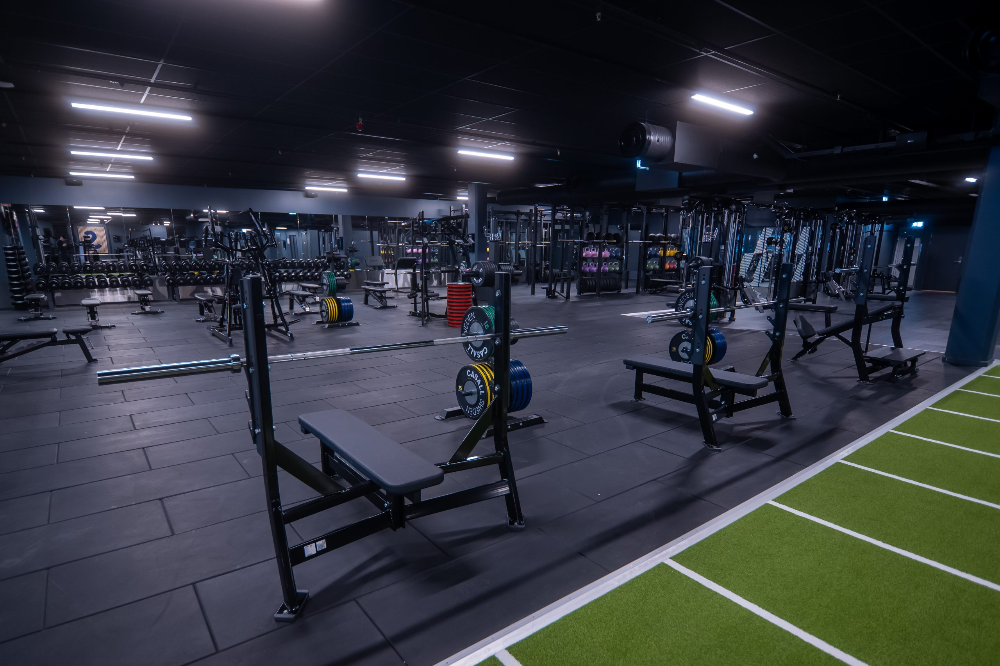

Noen av interessene jeg har er blant annet teknologi, videospill, filmer og serier, være med venner, slalom, båt, og gå ut. Jeg er veldig lite hjemme og min største hobby/aktivitet er å trene styrke på treningssenter 6 ganger i uken hver uke, normalt 2-4 timer hver dag i nesten 1 år nå, kunne bruke mindre tid hvis jeg forter meg eller hvis jeg trener alene men det er sjeldent jeg trener alene.